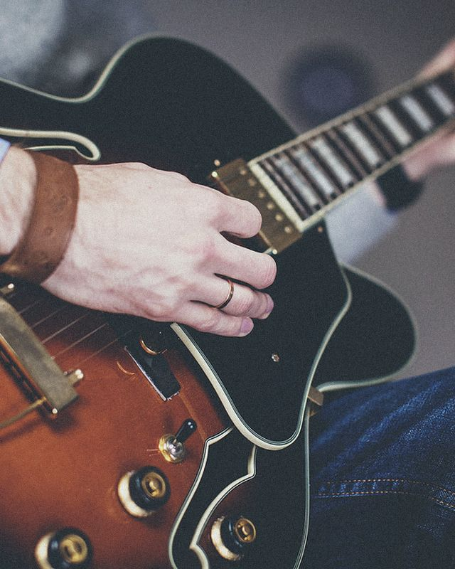

<title>Suena donde empieza</title>
<link rel="preconnect" href="https://fonts.googleapis.com">
<link rel="preconnect" href="https://fonts.gstatic.com" crossorigin>
<link href="https://fonts.googleapis.com/css2?family=Radio+Canada:wdth,wght@75..100,300..700&display=swap" rel="stylesheet">
<style>
:root{
  --tinta:#16181D;--papel:#F4F4F1;--grafito:#5A5F69;--niebla:#E4E6E8;--azul:#2A4BD7;--sobre-azul:#F4F4F1;
  --bg:var(--papel);--fg:var(--tinta);--muted:var(--grafito);--line:#CFD2D6;--panel:var(--niebla);--acc:var(--azul);
  --sans:'Radio Canada',system-ui,-apple-system,'Segoe UI',Roboto,Arial,sans-serif;
}
@media (prefers-color-scheme:dark){:root:not([data-theme="light"]){color-scheme:dark;--bg:#101217;--fg:#E8E9EC;--muted:#9AA0AA;--line:#2B2F37;--panel:#1A1D23;--acc:#8CA6FF;--sobre-azul:#101217}}
:root[data-theme="dark"]{color-scheme:dark;--bg:#101217;--fg:#E8E9EC;--muted:#9AA0AA;--line:#2B2F37;--panel:#1A1D23;--acc:#8CA6FF;--sobre-azul:#101217}
*{box-sizing:border-box}
html{-webkit-text-size-adjust:100%}
body{background:var(--bg);color:var(--fg);font-family:var(--sans);font-size:17px;line-height:1.55;margin:0}
main,header{overflow-x:clip}
.wrap{max-width:1120px;margin:0 auto;padding-inline:clamp(16px,4vw,40px)}
.col{max-width:40rem}
h1,h2,h3{font-weight:650;font-stretch:92%;text-wrap:balance;line-height:1.08;margin:0}
h2{font-size:clamp(28px,4vw,40px);letter-spacing:-.01em}
h3{font-size:19px;line-height:1.25}
p{margin:0}
.flow>*+*{margin-top:.9em}
.lab{font-stretch:75%;font-weight:600;text-transform:uppercase;letter-spacing:.08em;font-size:13px;line-height:1.3}
.muted{color:var(--muted)}
a{color:var(--acc)}
a:focus-visible,button:focus-visible{outline:2px solid var(--acc);outline-offset:3px}
section{padding-block:clamp(56px,8vw,104px);border-top:1px solid var(--line)}
.sechead{display:grid;grid-template-columns:minmax(0,14rem) minmax(0,1fr);gap:24px 48px;align-items:start;margin-bottom:40px}
.sechead .lab{padding-top:.7em;color:var(--muted)}
@media (max-width:760px){.sechead{grid-template-columns:1fr;gap:12px}.sechead .lab{padding-top:0}}

/* hero */
.hero{padding-block:clamp(24px,4vw,48px) clamp(48px,7vw,88px)}
.top{display:flex;justify-content:space-between;gap:16px;align-items:baseline;flex-wrap:wrap;padding-block:8px 28px}
.top .wm{height:26px;width:auto;color:var(--fg)}
.hero-grid{display:grid;grid-template-columns:minmax(0,1.05fr) minmax(0,1fr);gap:clamp(28px,5vw,64px);align-items:end}
@media (max-width:860px){.hero-grid{grid-template-columns:1fr}}
.hero h1{font-size:clamp(46px,8.4vw,104px);letter-spacing:-.025em;line-height:.95}
.hero .dek{font-size:clamp(18px,2vw,21px);max-width:30rem;margin-top:24px}
.play{display:inline-flex;align-items:center;gap:14px;margin-top:32px;font:inherit;font-size:16px;font-weight:600;color:var(--fg);background:none;border:1.5px solid var(--fg);border-radius:999px;padding:10px 20px 10px 12px;cursor:pointer}
.play .ico{width:30px;height:30px;border-radius:50%;background:var(--fg);display:grid;place-items:center}
.play .ico svg{fill:var(--bg);width:12px;height:12px;margin-left:2px}
.play:hover{background:var(--panel)}
.play small{font-weight:400;color:var(--muted)}

/* anotación sobre foto */
.foto{position:relative;margin:0;max-width:100%}
.foto img{display:block;width:100%;height:auto;aspect-ratio:4/5;object-fit:cover}
.foto svg.an{position:absolute;inset:0;width:100%;height:100%;overflow:visible;pointer-events:none}
.an .ring{fill:none;stroke:#F4F4F1;stroke-width:2.2}
.an .dot{fill:#F4F4F1}
.an .ln{stroke:#F4F4F1;stroke-width:1.4}
.an .echo{fill:none;stroke:#F4F4F1;stroke-width:1.4;opacity:0}
.foto .tag{position:absolute;background:#F4F4F1;color:#16181D;padding:9px 12px 10px;max-width:62%;box-shadow:0 1px 0 rgba(0,0,0,.08)}
.foto .tag .lab{font-size:12px}
.foto .tag .paso{font-size:15px;line-height:1.3;margin-top:3px}
@media (max-width:600px){.foto .tag{max-width:80%;padding:7px 10px 8px}.foto .tag .paso{font-size:14px}}
.foto .tag .cond{font-size:12px;color:#5A5F69;margin-top:4px;font-variant-numeric:tabular-nums}
.cap{font-size:13px;color:var(--muted);margin-top:10px}
.foto figcaption{font-size:13px;color:var(--muted);margin-top:10px}
.sonando .echo{animation:eco 1.8s ease-out 1}
.sonando .echo.b{animation-delay:.46s}
@keyframes eco{0%{opacity:.9;r:10}100%{opacity:0;r:46}}
@media (prefers-reduced-motion:reduce){.sonando .echo{animation:none}}

/* relato */
.relato{display:grid;grid-template-columns:minmax(0,14rem) minmax(0,1fr);gap:0 48px}
.relato ol{list-style:none;margin:0;padding:0;counter-reset:m}
.relato li{display:grid;grid-template-columns:minmax(0,9rem) minmax(0,1fr);gap:8px 32px;padding-block:22px;border-top:1px solid var(--line)}
.relato li:first-child{border-top:0;padding-top:0}
.relato li .lab{color:var(--muted);padding-top:.45em}
.relato li p{font-size:clamp(20px,2.3vw,25px);line-height:1.38;font-weight:400;max-width:34rem}
.relato li p b{font-weight:650}
@media (max-width:760px){.relato{grid-template-columns:1fr}.relato li{grid-template-columns:1fr;gap:6px}}
.firma-linea{margin-top:36px;padding-top:28px;border-top:1.5px solid var(--fg);display:flex;flex-wrap:wrap;gap:12px 32px;align-items:baseline}
.firma-linea strong{font-size:clamp(26px,3.4vw,36px);font-weight:650;font-stretch:92%;letter-spacing:-.01em}

/* nombre */
.acep{display:grid;grid-template-columns:repeat(2,minmax(0,1fr));gap:24px}
@media (max-width:760px){.acep{grid-template-columns:1fr}}
.acep div{padding:24px;background:var(--panel)}
.acep .n{font-size:13px;color:var(--muted)}
.acep .def{font-size:21px;line-height:1.3;margin-top:8px;font-weight:500}
.acep .uso{margin-top:14px}

/* tablas */
.tbl{overflow-x:auto;margin-top:8px}
table{border-collapse:collapse;width:100%;min-width:560px;font-size:15px;line-height:1.4}
th,td{text-align:left;vertical-align:top;padding:12px 16px 12px 0;border-top:1px solid var(--line)}
th{font-stretch:75%;font-weight:600;text-transform:uppercase;letter-spacing:.07em;font-size:12px;color:var(--muted);border-top:1.5px solid var(--fg)}
td:first-child{font-weight:600}
td.num{font-variant-numeric:tabular-nums}

/* idea */
.tesis{font-size:clamp(34px,5.4vw,64px);font-weight:650;font-stretch:92%;letter-spacing:-.02em;line-height:1.02;max-width:14ch}
.dos{display:grid;grid-template-columns:repeat(2,minmax(0,1fr));gap:40px;margin-top:40px}
@media (max-width:760px){.dos{grid-template-columns:1fr;gap:28px}}

/* sonido */
.onda{background:var(--panel);padding:20px 20px 12px;margin-top:8px}
.onda svg{display:block;width:100%;height:auto}
.onda .ax{stroke:var(--line);stroke-width:1}
.onda .env{fill:var(--fg);opacity:.9}
.onda text{fill:var(--muted);font-family:var(--sans);font-size:12px}
.onda .nota{fill:var(--fg);font-size:14px;font-weight:600}
.aviso{border-left:3px solid var(--acc);padding:4px 0 4px 18px;max-width:44rem;margin-top:28px}

/* logo */
.logo-stage{display:grid;grid-template-columns:minmax(0,2fr) minmax(0,1fr);gap:16px}
@media (max-width:760px){.logo-stage{grid-template-columns:1fr}}
.logo-stage>div{display:grid;place-items:center;min-height:240px;padding:32px;overflow:hidden}
.ls-papel{background:#F4F4F1;color:#16181D;border:1px solid var(--line)}
.ls-tinta{background:#16181D;color:#F4F4F1}
.ls-azul{background:#2A4BD7;color:#F4F4F1}
.logo-stage .wm{width:min(100%,520px);height:auto}
.logo-stage .ic{width:120px;height:120px}
.logo-row{display:grid;grid-template-columns:repeat(2,minmax(0,1fr));gap:16px;margin-top:16px}
.logo-row>div{display:flex;align-items:center;justify-content:center;min-height:140px;padding:24px;overflow:hidden}
.logo-row .wm{width:min(100%,240px);height:auto}

/* etiqueta */
.etq-grid{display:grid;grid-template-columns:repeat(2,minmax(0,1fr));gap:24px}
@media (max-width:760px){.etq-grid{grid-template-columns:1fr}}
.anat{display:grid;grid-template-columns:minmax(0,1fr) minmax(0,1fr);gap:40px;align-items:center;margin-bottom:48px}
@media (max-width:760px){.anat{grid-template-columns:1fr}}
.anat svg{width:100%;height:auto;display:block}
.anat svg text{font-family:var(--sans)}
.reglas{margin:0;padding:0;list-style:none;display:grid;gap:12px}
.reglas li{padding-left:22px;position:relative}
.reglas li::before{content:"";position:absolute;left:0;top:.55em;width:9px;height:9px;border:1.5px solid var(--acc);border-radius:50%}

/* color */
.sw{display:grid;grid-template-columns:repeat(4,minmax(0,1fr));gap:12px}
@media (max-width:760px){.sw{grid-template-columns:repeat(2,minmax(0,1fr))}}
.sw div{padding:14px;min-height:150px;display:flex;flex-direction:column;justify-content:space-between;font-size:14px;line-height:1.3}
.sw b{font-weight:650;font-size:16px}
.sw code{font-family:var(--sans);font-variant-numeric:tabular-nums;font-size:13px}
.fuera{margin-top:28px;display:flex;flex-wrap:wrap;gap:8px}
.fuera span{border:1px solid var(--line);padding:5px 10px;font-size:14px;text-decoration:line-through;text-decoration-color:var(--muted);color:var(--muted)}

/* tipo */
.voces{display:grid;gap:0}
.voz{display:grid;grid-template-columns:minmax(0,12rem) minmax(0,1fr);gap:8px 32px;padding-block:24px;border-top:1px solid var(--line)}
@media (max-width:760px){.voz{grid-template-columns:1fr}}
.voz .spec{font-size:14px;color:var(--muted)}

/* aplicaciones */
.apps{display:grid;grid-template-columns:repeat(3,minmax(0,1fr));gap:24px;align-items:start}
@media (max-width:900px){.apps{grid-template-columns:repeat(2,minmax(0,1fr))}}
@media (max-width:600px){.apps{grid-template-columns:1fr}}
.tel{background:#16181D;border-radius:34px;padding:10px;max-width:300px;margin:0 auto;width:100%}
.scr{background:#F4F4F1;color:#16181D;border-radius:26px;padding:22px 18px 18px;min-height:520px;display:flex;flex-direction:column;gap:14px;font-size:14px}
.scr .bar{display:flex;justify-content:space-between;font-size:11px;color:#5A5F69;font-variant-numeric:tabular-nums}
.scr h4{margin:6px 0 0;font-size:26px;line-height:1.08;font-weight:650;font-stretch:92%;letter-spacing:-.01em}
.scr .row{border-top:1px solid #CFD2D6;padding-top:9px}
.scr .row .lab{font-size:11px;color:#5A5F69}
.scr .row div+div{margin-top:2px}
.scr .btn{border:1.5px solid #16181D;border-radius:999px;padding:11px 14px;font-weight:600;text-align:center}
.scr .btn.pri{background:#16181D;color:#F4F4F1}
.scr .grow{flex:1}
.scr .tagm{display:inline-flex;align-items:center;gap:8px;background:#E4E6E8;padding:6px 10px;align-self:flex-start}
.scr .tagm i{width:9px;height:9px;border:1.8px solid #2A4BD7;border-radius:50%;display:inline-block}
.obj{background:var(--panel);min-height:540px;display:grid;place-items:center;padding:24px}
.obj svg{width:100%;max-width:340px;height:auto}
.apps figcaption{font-size:14px;color:var(--muted);margin-top:12px;max-width:300px;margin-inline:auto}

/* refs */
.refs{font-size:14.5px;line-height:1.5;max-width:52rem;display:grid;gap:10px}
.refs p{padding-left:2em;text-indent:-2em}
footer{border-top:1px solid var(--line);padding-block:32px 48px;font-size:14px;color:var(--muted)}
</style>

<svg width="0" height="0" style="position:absolute" aria-hidden="true">
  <defs><g id="wm"><path d="M58 -523H191L206 -443Q236 -487 278.0 -511.0Q320 -535 367 -535V-395Q316 -395 279.0 -384.0Q242 -373 209 -347V0H73V-399Q73 -420 71.5 -436.5Q70 -453 66 -475Z"/><path transform="translate(-14 0)" d="M413 -253Q413 -341 444.0 -404.0Q475 -467 529.5 -501.0Q584 -535 654 -535Q721 -535 770.0 -504.0Q819 -473 846.0 -415.0Q873 -357 873 -273Q873 -257 871.5 -243.0Q870 -229 868 -220H512V-312H770L743 -274Q743 -355 718.0 -389.5Q693 -424 652 -424Q622 -424 598.0 -408.0Q574 -392 560.0 -356.0Q546 -320 546 -261Q546 -206 564.0 -171.5Q582 -137 614.0 -120.5Q646 -104 690 -104Q718 -104 748.5 -113.0Q779 -122 802 -135L844 -32Q810 -14 767.5 -1.0Q725 12 675 12Q593 12 534.0 -21.0Q475 -54 444.0 -113.5Q413 -173 413 -253Z"/><path transform="translate(-28 0)" d="M971 0V-715L1107 -735V0Z"/><path transform="translate(-42 0)" d="M1206 -253Q1206 -341 1237.0 -404.0Q1268 -467 1322.5 -501.0Q1377 -535 1447 -535Q1514 -535 1563.0 -504.0Q1612 -473 1639.0 -415.0Q1666 -357 1666 -273Q1666 -257 1664.5 -243.0Q1663 -229 1661 -220H1305V-312H1563L1536 -274Q1536 -355 1511.0 -389.5Q1486 -424 1445 -424Q1415 -424 1391.0 -408.0Q1367 -392 1353.0 -356.0Q1339 -320 1339 -261Q1339 -206 1357.0 -171.5Q1375 -137 1407.0 -120.5Q1439 -104 1483 -104Q1511 -104 1541.5 -113.0Q1572 -122 1595 -135L1637 -32Q1603 -14 1560.5 -1.0Q1518 12 1468 12Q1386 12 1327.0 -21.0Q1268 -54 1237.0 -113.5Q1206 -173 1206 -253Z"/><path transform="translate(-56 0)" d="M1692 -523H1838L1963 -119H1925L2047 -523H2190L2005 0H1877Z"/><path transform="translate(-70 0)" d="M2217 -261Q2217 -348 2248.0 -409.0Q2279 -470 2333.5 -502.5Q2388 -535 2459 -535Q2530 -535 2584.5 -502.5Q2639 -470 2670.0 -409.0Q2701 -348 2701 -261Q2701 -175 2670.0 -114.0Q2639 -53 2584.5 -20.5Q2530 12 2459 12Q2388 12 2333.0 -20.5Q2278 -53 2247.5 -114.0Q2217 -175 2217 -261ZM2355 -261Q2355 -206 2368.0 -171.0Q2381 -136 2404.5 -120.0Q2428 -104 2459 -104Q2491 -104 2514.0 -120.0Q2537 -136 2550.0 -171.0Q2563 -206 2563 -261Q2563 -317 2550.0 -352.0Q2537 -387 2514.0 -403.5Q2491 -420 2459 -420Q2428 -420 2404.5 -403.5Q2381 -387 2368.0 -352.0Q2355 -317 2355 -261Z"/></g></defs>
  <symbol id="r" viewBox="0 0 512 512"><rect width="512" height="512" rx="112" fill="#16181D"/><path fill="#F4F4F1" transform="translate(136.8 406.0) scale(0.5607)" d="M58 -523H191L206 -443Q236 -487 278.0 -511.0Q320 -535 367 -535V-395Q316 -395 279.0 -384.0Q242 -373 209 -347V0H73V-399Q73 -420 71.5 -436.5Q70 -453 66 -475Z"/></symbol>
</svg>

<header class="wrap hero">
  <div class="top">
    <svg class="wm" viewBox="58 -735 2573 747" role="img" aria-label="relevo"><use href="#wm" fill="currentColor"/></svg>
    <span class="lab muted">Propuesta de marca D-071 · 25 de septiembre de 2026 · sin luz</span>
  </div>
  <div class="hero-grid">
    <div>
    <figure class="foto" id="heroFoto">
      
      <svg class="an" viewBox="0 0 640 800" aria-hidden="true">
        <circle class="echo" cx="508" cy="330" r="10"/><circle class="echo b" cx="508" cy="330" r="10"/>
        <circle class="ring" cx="508" cy="330" r="15"/><circle class="dot" cx="508" cy="330" r="3.2"/>
        <line class="ln" x1="508" y1="345" x2="508" y2="596"/>
      </svg>
      <div class="tag" style="right:4%;bottom:6%">
        <div class="lab">Mesa del comedor · Pintar</div>
        <div class="paso">Abrir la caja de acuarelas</div>
        <div class="cond">Suena tras 40 min en las apps elegidas</div>
      </div>
    </figure>
    <p class="cap">Foto de muestra (CC0), con la receta de imagen del estudio anterior. La etiqueta es el recurso gráfico de esta propuesta.</p>
    </div>
    <div>
      <h1>Suena donde empieza.</h1>
      <p class="dek">Relevo es un recordatorio que preparas en el teléfono y que suena en el lugar donde empieza lo que quieres retomar: la mesa con las acuarelas, la repisa de la guitarra, la puerta de las zapatillas.</p>
      <button class="play" id="play" type="button"><span class="ico"><svg viewBox="0 0 10 12"><path d="M0 0L10 6L0 12Z"/></svg></span>Escuchar la firma sonora <small>2 s</small></button>
    </div>
  </div>
</header>

<main>
<section class="wrap">
  <div class="sechead"><span class="lab">Qué cambia</span>
    <div class="col flow">
      <h2>El centro ya no es una forma. Es un hecho del producto.</h2>
      <p>Relevo no usará luz por ahora (decisión del autor, D-070). La señal es un sonido, como ya ocurre en la app 2.6 con un parlante Bluetooth. Esta propuesta saca la luz de todos los medios de la marca y deja atrás la coma: ninguna metáfora gráfica explica el proyecto mejor que lo que hace.</p>
      <p>Todas las demás notificaciones suenan desde el mismo lugar, el teléfono, y todas piden volver a él. El aviso de Relevo suena en otro lugar y lleva la atención hacia ahí. Esa diferencia es cierta hoy, nadie más en la categoría puede decirla y no necesita adornos.</p>
    </div>
  </div>
</section>

<section class="wrap">
  <div class="relato">
    <div class="lab muted" style="padding-top:.5em">El relato</div>
    <div>
      <ol>
        <li><span class="lab">Lo que pasa</span><p>Casi nadie decide abandonar lo que le gusta. Deja de hacerlo sin notarlo: las acuarelas quedan en la mesa, la guitarra en la repisa, y la tarde se va en otra parte. La intención no desaparece; <b>deja de participar.</b></p></li>
        <li><span class="lab">Lo que se ofrece</span><p>Casi todo lo que existe para esto vive dentro del mismo teléfono: contadores, bloqueos, rachas. Supone que falta voluntad y deja una idea de paso: que descansar con el teléfono es fallar.</p></li>
        <li><span class="lab">Lo que propone Relevo</span><p>Relevo parte de otra idea: <b>no falta voluntad, falta lugar.</b> Eliges qué quieres retomar, cómo empieza y después de cuánto uso quieres que suene. Dejas el objeto donde empieza.</p></li>
        <li><span class="lab">El momento</span><p>Cuando se cumple ese tiempo, el teléfono no vibra. <b>Suena la mesa.</b> Dos notas que bajan, una sola vez. No explican nada, porque sabes qué hay ahí.</p></li>
        <li><span class="lab">Lo que queda abierto</span><p>Puedes ir o quedarte. Las dos respuestas son válidas, y Relevo no insiste ni te reprocha nada.</p></li>
      </ol>
      <div class="firma-linea"><strong>Suena donde empieza.</strong><span class="muted">Firma verbal. Descriptor: «Un recordatorio que preparas en el teléfono y suena en el lugar de tu actividad».</span></div>
    </div>
  </div>
</section>

<section class="wrap">
  <div class="sechead"><span class="lab">Por qué es un relato</span>
    <div class="col flow">
      <h2>La persona protagoniza; Relevo solo aparece en el cuarto momento.</h2>
      <p>Las historias en las que el público puede reconocerse generan una conexión más fuerte entre la persona y la marca que los argumentos (Escalas, 2004), y su efecto depende de que quien escucha se sienta dentro de la historia (Green &amp; Brock, 2000). Por eso el relato empieza con algo que la persona ya vivió, con palabras del autor: «No decidí abandonarlas; simplemente dejaron de participar en lo que hacía» (memoria, capítulo 1). El producto aparece tarde, como en los relatos donde la marca acompaña y no rescata (Woodside et al., 2008).</p>
      <p>El final queda abierto a propósito. La mayoría de las marcas del rubro terminan su historia con el producto resolviendo el problema. Relevo no puede prometer eso: no observa si la actividad ocurre, y el descanso con el teléfono no es un error (Tonietto et al., 2021). Terminar en «puedes ir o quedarte» protege la autonomía, que es la condición para que un recordatorio no se viva como control (Smit et al., 2019).</p>
    </div>
  </div>
</section>

<section class="wrap">
  <div class="sechead"><span class="lab">El nombre</span>
    <div class="col flow">
      <h2>«Relevar» tiene dos sentidos, y Relevo usa los dos.</h2>
      <p>El diccionario de la RAE y la ASALE (2014) registra, entre otras, estas dos acepciones. Ninguna exige hablar de carreras, testigos ni turnos.</p>
    </div>
  </div>
  <div class="acep">
    <div><span class="n">Acepción 1</span><p class="def">Hacer de relieve algo; resaltar.</p><p class="uso">Cuando suena, un lugar de la casa sobresale del resto por un momento. El sonido le da relieve a la mesa, no al teléfono.</p></div>
    <div><span class="n">Acepción 2</span><p class="def">Exonerar de un peso o gravamen, y también de un empleo o cargo.</p><p class="uso">El lugar se hace cargo de recordar. Es lo que la psicología llama descarga cognitiva: dejar en el entorno algo que la memoria tendría que sostener (Risko &amp; Gilbert, 2016).</p></div>
  </div>
</section>

<section class="wrap">
  <div class="sechead"><span class="lab">La idea</span>
    <div><p class="tesis">No falta voluntad. Falta lugar.</p></div>
  </div>
  <div class="dos">
    <div class="flow"><h3>Lo que dice la investigación</h3>
      <p>Las intenciones que se cumplen más tarde dependen de una señal que las traiga de vuelta en el momento oportuno (McDaniel &amp; Einstein, 2000). Formular «cuando ocurra X, haré Y» ayuda porque ata la intención a una situación concreta (Gollwitzer &amp; Sheeran, 2006). Las redes con desplazamiento infinito, en cambio, no ofrecen puntos de cierre donde detenerse (Montag et al., 2019).</p>
      <p>Una notificación en el teléfono tampoco es neutra: recibirla, aun sin mirarla, reduce el rendimiento en una tarea de atención (Stothart et al., 2015). Un aviso que sale del teléfono no compite con él en su propio terreno.</p>
    </div>
    <div class="flow"><h3>Lo que la separa del rubro</h3>
      <div class="tbl"><table style="min-width:0">
        <thead><tr><th>El rubro suele</th><th>Relevo</th></tr></thead>
        <tbody>
          <tr><td>Medir el tiempo de pantalla</td><td>Nombra lo que quieres retomar</td></tr>
          <tr><td>Bloquear aplicaciones</td><td>Deja el teléfono como está</td></tr>
          <tr><td>Premiar rachas</td><td>Acepta cualquier respuesta</td></tr>
          <tr><td>Avisar en el teléfono</td><td>Suena en otro lugar</td></tr>
          <tr><td>Hablar de calma y equilibrio</td><td>Habla de mesas, repisas y puertas</td></tr>
        </tbody></table></div>
    </div>
  </div>
</section>

<section class="wrap" id="sonido">
  <div class="sechead"><span class="lab">Firma sonora</span>
    <div class="col flow">
      <h2>El símbolo de Relevo se oye antes de verse.</h2>
      <p>Si la señal es un sonido, ese sonido es el activo más reconocible de la marca. Un logo sonoro pesa por sí mismo: en un experimento, el número de notas cambió cuánto se estaba dispuesto a pagar por la marca, y seis notas se valoraron más que tres o nueve (Krishnan et al., 2012). Relevo prioriza otra función, porque su sonido suena en una casa y no en un anuncio. La firma está hecha para dos cosas: que no suene urgente y que se sepa de dónde viene. Por eso tiene dos notas; una versión más larga para video queda por probar.</p>
    </div>
  </div>
  <div class="onda">
    <svg viewBox="0 0 1000 220" role="img" aria-label="Diagrama de la firma sonora: una nota a 587 hercios en el instante cero y otra a 440 hercios a los 0,46 segundos, ambas con ataque breve y decaimiento libre hasta 2,2 segundos.">
      <line class="ax" x1="40" y1="180" x2="980" y2="180"/>
      <g id="ticks"></g>
      <path class="env" id="env1"/>
      <path class="env" id="env2" style="opacity:.55"/>
      <text class="nota" x="46" y="30">Re5 · 587 Hz</text>
      <text class="nota" x="255" y="62">La4 · 440 Hz</text>
      <text x="40" y="206">0 s</text>
    </svg>
  </div>
  <div class="tbl" style="margin-top:28px"><table>
    <thead><tr><th>Parámetro</th><th>App 2.6 hoy</th><th>Propuesta</th><th>Por qué</th></tr></thead>
    <tbody>
      <tr><td>Altura</td><td class="num">660 y 784 Hz alternados</td><td class="num">587 → 440 Hz</td><td>La urgencia percibida sube con la frecuencia fundamental (Edworthy et al., 1991).</td></tr>
      <tr><td>Contorno</td><td>Sube y baja, sin fin</td><td>Baja una cuarta, una vez</td><td>Un contorno descendente se percibe menos urgente que uno ascendente o irregular (Edworthy et al., 1991).</td></tr>
      <tr><td>Repetición</td><td>Continúa hasta que la persona responde</td><td>Dos notas y silencio</td><td>La urgencia crece con la velocidad y el número de repeticiones (Hellier et al., 1993). Que no insista es también lo que promete el relato.</td></tr>
      <tr><td>Timbre</td><td>Tono puro (sinusoide)</td><td>Golpe de madera: parciales 1 : 3,9 : 9,2 y ataque de 4 ms con ruido</td><td>Un tono puro es difícil de ubicar; los sonidos de banda ancha dan más pistas para localizar la fuente (Middlebrooks &amp; Green, 1991).</td></tr>
      <tr><td>Final</td><td>Corte al detenerse</td><td>Decaimiento libre, 2,2 s en total</td><td>Termina solo, sin que nadie tenga que apagarlo.</td></tr>
    </tbody></table></div>
  <p class="aviso">Este cambio afecta la prueba 2.6: hoy el tono sigue sonando hasta que la persona responde. Conviene decidir antes del testeo si se prueba la firma o el tono actual, y medir si la firma se oye y se ubica en hogares reales y con el transductor pequeño del objeto final, que quizás no reproduzca bien 440 Hz. Nada de esto se ha probado con personas.</p>
</section>

<section class="wrap">
  <div class="sechead"><span class="lab">Logotipo</span>
    <div class="col flow">
      <h2>Un logotipo que no compite con el lugar.</h2>
      <p>Como la idea vive en el sonido y en el lugar, el logotipo no carga otra metáfora. Es la palabra en minúsculas, dibujada con Radio Canada, la misma familia del sistema, con el espaciado ajustado a mano.</p>
    </div>
  </div>
  <div class="logo-stage">
    <div class="ls-papel"><svg class="wm" viewBox="58 -735 2573 747" role="img" aria-label="relevo"><use href="#wm" fill="currentColor"/></svg></div>
    <div class="ls-tinta"><svg class="ic" viewBox="0 0 512 512" role="img" aria-label="Ícono: r minúscula"><use href="#r"/></svg></div>
  </div>
  <div class="logo-row">
    <div class="ls-tinta"><svg class="wm" viewBox="58 -735 2573 747" role="img" aria-label="relevo sobre tinta"><use href="#wm" fill="currentColor"/></svg></div>
    <div class="ls-azul"><svg class="wm" viewBox="58 -735 2573 747" role="img" aria-label="relevo sobre azul"><use href="#wm" fill="currentColor"/></svg></div>
  </div>
  <div class="tbl" style="margin-top:32px"><table>
    <thead><tr><th>Decisión</th><th>Fundamento</th></tr></thead>
    <tbody>
      <tr><td>Solo logotipo, sin símbolo gráfico</td><td>El logotipo es el elemento de identidad más propio de una marca, y el color el menos (Ward et al., 2020). El símbolo de Relevo es la firma sonora, que ningún dibujo tendría que repetir.</td></tr>
      <tr><td>Minúsculas</td><td>Las minúsculas se perciben más cercanas y las mayúsculas más autoritarias (Xu et al., 2017). Relevo no da órdenes.</td></tr>
      <tr><td>Radio Canada 650, ancho 92</td><td>Una sola familia para logotipo, texto e interfaz da coherencia al sistema (Wheeler, 2017). Sus terminales en ángulo y la «l» con corte oblicuo le dan un rasgo propio sin adorno.</td></tr>
      <tr><td>Espaciado −14 unidades</td><td>A tamaño de título el espaciado de texto se ve abierto; cerrarlo une la palabra en una sola forma, como pide Mollerup (2013) para las marcas tipográficas.</td></tr>
      <tr><td>Ícono «r»</td><td>Una forma simple y reconocible funciona mejor a tamaño pequeño (Henderson et al., 2004). Falta comprobar que se reconozca entre otros íconos del teléfono.</td></tr>
    </tbody></table></div>
</section>

<section class="wrap">
  <div class="sechead"><span class="lab">Recurso gráfico</span>
    <div class="col flow">
      <h2>La etiqueta de lugar.</h2>
      <p>Donde otras marcas pondrían un símbolo, Relevo pone una etiqueta: un anillo donde está el objeto, una línea y el nombre del lugar con lo que la persona escribió en la app. El texto fija lo que la imagen significa para esa persona, lo que Barthes (1977) llamó anclaje. Un vector que une dos elementos los presenta como relacionados (Kress &amp; van Leeuwen, 2021); aquí une el objeto con la intención, igual que la memoria prospectiva une una señal con una acción (McDaniel &amp; Einstein, 2000).</p>
    </div>
  </div>
  <div class="anat">
    <svg viewBox="0 0 520 240" role="img" aria-label="Anatomía de la etiqueta: anillo, línea, lugar y actividad, primer paso y condición.">
      <rect x="0" y="0" width="520" height="240" fill="var(--panel)"/>
      <circle cx="70" cy="70" r="15" fill="none" stroke="var(--acc)" stroke-width="2.2"/><circle cx="70" cy="70" r="3.2" fill="var(--acc)"/>
      <line x1="70" y1="85" x2="70" y2="150" stroke="var(--fg)" stroke-width="1.4"/>
      <rect x="70" y="150" width="300" height="72" fill="var(--bg)"/>
      <text x="82" y="173" fill="var(--fg)" font-size="12" font-weight="600" style="font-stretch:75%;letter-spacing:.08em">REPISA DEL LIVING · GUITARRA</text>
      <text x="82" y="194" fill="var(--fg)" font-size="15">Sacar la guitarra</text>
      <text x="82" y="212" fill="var(--muted)" font-size="12">Suena tras 30 min en las apps elegidas</text>
      <g fill="var(--muted)" font-size="12"><text x="102" y="66">anillo: dónde está el objeto</text><text x="84" y="124">línea</text><text x="388" y="173">lugar · actividad</text><text x="388" y="194">primer paso</text><text x="388" y="212">condición</text></g>
    </svg>
    <ul class="reglas">
      <li>Una etiqueta por imagen. Si hay dos, la imagen no dice dónde empieza.</li>
      <li>El texto es literal: el lugar y el primer paso con las palabras de la persona, no un eslogan.</li>
      <li>El anillo va en azul pasta sobre fondos claros y en papel sobre fotos.</li>
      <li>Sin ondas, destellos ni brillos. El sonido se indica con el lugar y la condición, no con un dibujo del sonido.</li>
    </ul>
  </div>
  <div class="etq-grid">
    <figure class="foto">
      
      <svg class="an" viewBox="0 0 640 800" aria-hidden="true"><circle class="ring" cx="330" cy="470" r="15"/><circle class="dot" cx="330" cy="470" r="3.2"/><line class="ln" x1="330" y1="485" x2="330" y2="612"/></svg>
      <div class="tag" style="left:40%;bottom:10%"><div class="lab">Velador · Leer</div><div class="paso">Abrir en el marcador</div><div class="cond">Suena tras 25 min en las apps elegidas</div></div>
    </figure>
    <figure class="foto">
      
      <svg class="an" viewBox="0 0 640 800" aria-hidden="true"><circle class="ring" cx="120" cy="620" r="15"/><circle class="dot" cx="120" cy="620" r="3.2"/><line class="ln" x1="135" y1="620" x2="250" y2="620"/></svg>
      <div class="tag" style="left:39%;top:73%"><div class="lab">Repisa del living · Guitarra</div><div class="paso">Sacar la guitarra</div><div class="cond">Suena tras 30 min en las apps elegidas</div></div>
    </figure>
  </div>
  <p class="muted" style="margin-top:14px;font-size:14px">Fotos de muestra con licencia CC0; la identidad final necesita una sesión propia en hogares reales, con consentimiento. Los lugares y pasos son ejemplos, no datos de participantes.</p>
</section>

<section class="wrap">
  <div class="sechead"><span class="lab">Color</span>
    <div class="col flow">
      <h2>Tinta, papel y el azul con que se anota.</h2>
      <p>Sin luz, el color deja de imitar al objeto. El único acento es el azul de un bolígrafo: el color con que se escribe una etiqueta, se marca un plano o se anota un margen. Se distingue del rojo de error, que se asocia a evitación en contextos de logro (Elliot et al., 2007; Elliot &amp; Maier, 2014), y de los verdes y morados del bienestar digital. El azul se asocia a competencia y confianza (Labrecque &amp; Milne, 2012), pero aquí se usa por su función, no por esa asociación.</p>
    </div>
  </div>
  <div class="sw">
    <div style="background:#16181D;color:#F4F4F1"><b>Tinta</b><span><code>#16181D</code><br>16,12:1 sobre papel</span></div>
    <div style="background:#F4F4F1;color:#16181D;border:1px solid var(--line)"><b>Papel</b><span><code>#F4F4F1</code><br>fondo principal</span></div>
    <div style="background:#5A5F69;color:#F4F4F1"><b>Grafito</b><span><code>#5A5F69</code><br>5,82:1 sobre papel</span></div>
    <div style="background:#E4E6E8;color:#16181D"><b>Niebla</b><span><code>#E4E6E8</code><br>paneles y etiquetas</span></div>
    <div style="background:#2A4BD7;color:#F4F4F1"><b>Azul pasta</b><span><code>#2A4BD7</code><br>6,18:1 con papel</span></div>
    <div style="background:#101217;color:#E8E9EC"><b>Noche</b><span><code>#101217</code><br>tema oscuro, 15,43:1</span></div>
    <div style="background:#8CA6FF;color:#101217"><b>Azul claro</b><span><code>#8CA6FF</code><br>8,04:1 sobre noche</span></div>
    <div style="background:#B3261E;color:#F4F4F1"><b>Error</b><span><code>#B3261E</code><br>solo para errores</span></div>
  </div>
  <div class="fuera" aria-label="Lo que se retira"><span>luz cálida 2700 K</span><span>brillos y halos</span><span>ventanas encendidas</span><span>degradados</span><span>la coma azul</span></div>
</section>

<section class="wrap">
  <div class="sechead"><span class="lab">Tipografía</span>
    <div class="col flow">
      <h2>Una familia, tres anchos.</h2>
      <p>Radio Canada (Charles Daoud, 2017) se diseñó para texto continuo y accesibilidad, tiene el cero sin raya y un eje de ancho que permite tres voces sin sumar otra familia.</p>
    </div>
  </div>
  <div class="voces">
    <div class="voz"><div class="spec">Título · 650 · ancho 92</div><div style="font-size:clamp(30px,4vw,44px);font-weight:650;font-stretch:92%;line-height:1.05;letter-spacing:-.015em">Suena donde empieza.</div></div>
    <div class="voz"><div class="spec">Texto · 400 · ancho 100</div><div style="font-size:18px;max-width:36rem">Eliges qué quieres retomar, cómo empieza y después de cuánto uso quieres que suene. 10, 20, 30 o 40 minutos: el cero se lee como cero.</div></div>
    <div class="voz"><div class="spec">Etiqueta · 600 · ancho 75 · mayúsculas +8 %</div><div class="lab" style="font-size:15px">Mesa del comedor · Pintar · 40 min</div></div>
  </div>
</section>

<section class="wrap">
  <div class="sechead"><span class="lab">Aplicaciones</span>
    <div class="col flow">
      <h2>La misma etiqueta en la app y en el objeto.</h2>
      <p>La etiqueta necesita un campo de lugar que la app 2.6 aún no tiene: hoy pregunta por la salida de audio («¿Dónde sonará la señal?»), no por el lugar. Las pantallas son bocetos.</p>
    </div>
  </div>
  <div class="apps">
    <figure style="margin:0">
      <div class="tel"><div class="scr">
        <div class="bar"><span>21:12</span><span>Relevo preparado</span></div>
        <h4>Pintar</h4>
        <span class="tagm lab"><i></i>Mesa del comedor</span>
        <div class="row"><div class="lab">Cómo empezarás</div><div>Abrir la caja de acuarelas</div></div>
        <div class="row"><div class="lab">Suena después de</div><div>40 min en las apps elegidas</div></div>
        <div class="row"><div class="lab">Sale por</div><div>Parlante junto a la mesa</div></div>
        <div class="grow"></div>
        <div class="btn">Escuchar la firma aquí</div>
        <div class="btn pri">Preparar relevo</div>
      </div></div>
      <figcaption>Preparar: el lugar aparece como etiqueta, con el mismo anillo.</figcaption>
    </figure>
    <figure style="margin:0">
      <div class="tel"><div class="scr">
        <div class="bar"><span>21:52</span><span>Sonó en la mesa del comedor</span></div>
        <h4>¿Qué decidiste?</h4>
        <div class="muted" style="color:#5A5F69">El relevo terminó después de 40 min en las apps elegidas.</div>
        <div class="grow"></div>
        <div class="btn">Comencé la actividad</div>
        <div class="btn">La dejé para después</div>
        <div class="btn">Cambié de idea</div>
        <div style="text-align:center;color:#5A5F69;font-size:13px">Omitir y volver al inicio</div>
      </div></div>
      <figcaption>Responder: las tres respuestas de la app 2.6, con el mismo peso. Ninguna se destaca.</figcaption>
    </figure>
    <figure style="margin:0">
      <div class="obj">
        <svg viewBox="40 110 200 180" role="img" aria-label="Boceto: objeto sobre una mesa con una etiqueta impresa en su base.">
          <line x1="10" y1="220" x2="270" y2="220" stroke="var(--muted)" stroke-width="1.2"/>
          <rect x="85" y="130" width="110" height="90" rx="30" fill="var(--bg)" stroke="var(--fg)" stroke-width="1.6"/>
          <g fill="var(--muted)"><circle cx="126" cy="162" r="2.2"/><circle cx="140" cy="162" r="2.2"/><circle cx="154" cy="162" r="2.2"/><circle cx="133" cy="174" r="2.2"/><circle cx="147" cy="174" r="2.2"/></g>
          <rect x="104" y="192" width="72" height="16" fill="var(--panel)"/>
          <svg x="116" y="195" width="48" height="10" viewBox="58 -735 2573 747"><use href="#wm" fill="var(--fg)"/></svg>
          <rect x="60" y="244" width="160" height="34" fill="var(--panel)" stroke="var(--line)"/>
          <circle cx="78" cy="261" r="6" fill="none" stroke="var(--acc)" stroke-width="1.8"/>
          <text x="92" y="265" fill="var(--fg)" font-family="var(--sans)" font-size="11" font-weight="600" style="font-stretch:75%;letter-spacing:.08em">MESA DEL COMEDOR · PINTAR</text>
        </svg>
      </div>
      <figcaption>Objeto: rejilla de sonido, sin difusor de luz. La etiqueta del lugar es una tarjeta que se cambia a mano. La forma sigue abierta.</figcaption>
    </figure>
  </div>
</section>

<section class="wrap">
  <div class="sechead"><span class="lab">Prueba contra lo genérico</span>
    <div class="col flow"><h2>Cuatro preguntas que la propuesta debe pasar.</h2></div>
  </div>
  <div class="tbl"><table>
    <thead><tr><th>Pregunta</th><th>Respuesta</th></tr></thead>
    <tbody>
      <tr><td>¿Podría decirlo otra app de bienestar digital?</td><td>No. «Suena donde empieza» exige un sonido fuera del teléfono y un lugar elegido.</td></tr>
      <tr><td>¿Usa los códigos del rubro?</td><td>No usa hojas, olas, degradados, anillos de progreso, rachas ni la palabra «calma».</td></tr>
      <tr><td>¿Es cierta hoy?</td><td>Sí. La app 2.6 ya hace sonar un parlante elegido; la frase no promete la forma final del objeto.</td></tr>
      <tr><td>¿Depende de una metáfora que haya que explicar?</td><td>No. No se apoya en puntuación, luz, testigo ni carrera. Describe lo que pasa.</td></tr>
    </tbody></table></div>
</section>

<section class="wrap">
  <div class="sechead"><span class="lab">Pendiente</span>
    <div class="col flow">
      <h2>Lo que falta decidir o probar.</h2>
      <ul class="reglas">
        <li>Decisión del autor sobre esta propuesta (D-071). Mientras tanto rige D-062.</li>
        <li>La memoria todavía describe una señal de luz y sonido (capítulos 1, 10, 11 y 13 y el glosario). Si la decisión de no usar luz se extiende al proyecto, hay que revisar esos capítulos y la prueba de asociación, que hoy usa una luz blanca cálida.</li>
        <li>Si la prueba 2.6 usa la firma o el tono actual, y cómo se oye y se ubica la firma en hogares reales.</li>
        <li>Si se lee bien la etiqueta de lugar sin explicación, y cómo se reconoce el ícono «r».</li>
      </ul>
    </div>
  </div>
</section>

<section class="wrap">
  <div class="sechead"><span class="lab">Referencias</span><div></div></div>
  <div class="refs">
    <p>Barthes, R. (1977). Rhetoric of the image. En S. Heath (Trad.), <i>Image, music, text</i> (pp. 32–51). Hill and Wang.</p>
    <p>Edworthy, J., Loxley, S., &amp; Dennis, I. (1991). Improving auditory warning design: Relationship between warning sound parameters and perceived urgency. <i>Human Factors, 33</i>(2), 205–231. https://doi.org/10.1177/001872089103300206</p>
    <p>Elliot, A. J., &amp; Maier, M. A. (2014). Color psychology: Effects of perceiving color on psychological functioning in humans. <i>Annual Review of Psychology, 65</i>, 95–120. https://doi.org/10.1146/annurev-psych-010213-115035</p>
    <p>Elliot, A. J., Maier, M. A., Moller, A. C., Friedman, R., &amp; Meinhardt, J. (2007). Color and psychological functioning: The effect of red on performance attainment. <i>Journal of Experimental Psychology: General, 136</i>(1), 154–168. https://doi.org/10.1037/0096-3445.136.1.154</p>
    <p>Escalas, J. E. (2004). Narrative processing: Building consumer connections to brands. <i>Journal of Consumer Psychology, 14</i>(1–2), 168–180. https://doi.org/10.1207/s15327663jcp1401&amp;2_19</p>
    <p>Gollwitzer, P. M., &amp; Sheeran, P. (2006). Implementation intentions and goal achievement: A meta-analysis of effects and processes. <i>Advances in Experimental Social Psychology, 38</i>, 69–119. https://doi.org/10.1016/S0065-2601(06)38002-1</p>
    <p>Green, M. C., &amp; Brock, T. C. (2000). The role of transportation in the persuasiveness of public narratives. <i>Journal of Personality and Social Psychology, 79</i>(5), 701–721. https://doi.org/10.1037/0022-3514.79.5.701</p>
    <p>Hellier, E. J., Edworthy, J., &amp; Dennis, I. (1993). Improving auditory warning design: Quantifying and predicting the effects of different warning parameters on perceived urgency. <i>Human Factors, 35</i>(4), 693–706. https://doi.org/10.1177/001872089303500408</p>
    <p>Henderson, P. W., Giese, J. L., &amp; Cote, J. A. (2004). Impression management using typeface design. <i>Journal of Marketing, 68</i>(4), 60–72. https://doi.org/10.1509/jmkg.68.4.60.42736</p>
    <p>Krishnan, V., Kellaris, J. J., &amp; Aurand, T. W. (2012). Sonic logos: Can sound influence willingness to pay? <i>Journal of Product &amp; Brand Management, 21</i>(4), 275–284. https://doi.org/10.1108/10610421211246685</p>
    <p>Kress, G., &amp; van Leeuwen, T. (2021). <i>Reading images: The grammar of visual design</i> (3.ª ed.). Routledge. https://doi.org/10.4324/9781003099857</p>
    <p>Labrecque, L. I., &amp; Milne, G. R. (2012). Exciting red and competent blue: The importance of color in marketing. <i>Journal of the Academy of Marketing Science, 40</i>(5), 711–727. https://doi.org/10.1007/s11747-010-0245-y</p>
    <p>McDaniel, M. A., &amp; Einstein, G. O. (2000). Strategic and automatic processes in prospective memory retrieval: A multiprocess framework. <i>Applied Cognitive Psychology, 14</i>(7), S127–S144. https://doi.org/10.1002/acp.775</p>
    <p>Middlebrooks, J. C., &amp; Green, D. M. (1991). Sound localization by human listeners. <i>Annual Review of Psychology, 42</i>, 135–159. https://doi.org/10.1146/annurev.ps.42.020191.001031</p>
    <p>Mollerup, P. (2013). <i>Marks of excellence: The development and taxonomy of trademarks</i> (ed. rev. y ampl.). Phaidon.</p>
    <p>Montag, C., Lachmann, B., Herrlich, M., &amp; Zweig, K. (2019). Addictive features of social media/messenger platforms and freemium games against the background of psychological and economic theories. <i>International Journal of Environmental Research and Public Health, 16</i>(14), 2612. https://doi.org/10.3390/ijerph16142612</p>
    <p>Real Academia Española y Asociación de Academias de la Lengua Española. (2014). Relevar. En <i>Diccionario de la lengua española</i> (23.ª ed., versión 23.7 en línea). https://dle.rae.es/relevar</p>
    <p>Risko, E. F., &amp; Gilbert, S. J. (2016). Cognitive offloading. <i>Trends in Cognitive Sciences, 20</i>(9), 676–688. https://doi.org/10.1016/j.tics.2016.07.002</p>
    <p>Smit, E. S., Zeidler, C., Resnicow, K., &amp; de Vries, H. (2019). Identifying the most autonomy-supportive message frame in digital health communication: A 2 × 2 between-subjects experiment. <i>Journal of Medical Internet Research, 21</i>(10), e14074. https://doi.org/10.2196/14074</p>
    <p>Stothart, C., Mitchum, A., &amp; Yehnert, C. (2015). The attentional cost of receiving a cell phone notification. <i>Journal of Experimental Psychology: Human Perception and Performance, 41</i>(4), 893–897. https://doi.org/10.1037/xhp0000100</p>
    <p>Tonietto, G. N., Malkoc, S. A., Reczek, R. W., &amp; Norton, M. I. (2021). Viewing leisure as wasteful undermines enjoyment. <i>Journal of Experimental Social Psychology, 97</i>, 104198. https://doi.org/10.1016/j.jesp.2021.104198</p>
    <p>Ward, E., Yang, S., Romaniuk, J., &amp; Beal, V. (2020). Building a unique brand identity: Measuring the relative ownership potential of brand identity element types. <i>Journal of Brand Management, 27</i>(4), 393–407. https://doi.org/10.1057/s41262-020-00187-6</p>
    <p>Wheeler, A. (2017). <i>Designing brand identity: An essential guide for the whole branding team</i> (5.ª ed.). Wiley.</p>
    <p>Woodside, A. G., Sood, S., &amp; Miller, K. E. (2008). When consumers and brands talk: Storytelling theory and research in psychology and marketing. <i>Psychology &amp; Marketing, 25</i>(2), 97–145. https://doi.org/10.1002/mar.20203</p>
    <p>Xu, X., Chen, R., &amp; Liu, M. W. (2017). The effects of uppercase and lowercase wordmarks on brand perceptions. <i>Marketing Letters, 28</i>(3), 449–460. https://doi.org/10.1007/s11002-016-9415-0</p>
  </div>
</section>
</main>
<footer><div class="wrap">Relevo · titulación de Diseño UDP · propuesta D-071, pendiente de decisión del autor. Firma sonora: <code>sonido/firma-relevo.wav</code>, generada con <code>sonido/firma-sonora.py</code>.</div></footer>

<script>
(function(){
  // dibuja las envolventes de la firma a escala: x = 40 + t * 427 (2,2 s = 940 px)
  var X=function(t){return 40+t*427.27};
  function env(t0,lvl,tau){var d='M'+X(t0)+' 180',t;for(t=0;t<=2.2-t0;t+=0.02){var a=Math.min(1,t/0.004)*Math.exp(-t/tau)*lvl;d+=' L'+X(t0+t).toFixed(1)+' '+(180-a*140).toFixed(1)}return d+' L'+X(2.2)+' 180 Z'}
  document.getElementById('env1').setAttribute('d',env(0,1,0.6));
  document.getElementById('env2').setAttribute('d',env(0.46,0.92,0.6));
  var tk=document.getElementById('ticks'),h='';
  [0.5,1,1.5,2].forEach(function(s){h+='<line class="ax" x1="'+X(s)+'" y1="176" x2="'+X(s)+'" y2="184"/><text x="'+(X(s)-10)+'" y="206">'+String(s).replace('.',',')+' s</text>'});
  tk.innerHTML=h;
  // reproducción: primero el WAV publicado; si no carga, la misma receta en Web Audio
  var ctx,buf,btn=document.getElementById('play'),fig=document.getElementById('heroFoto');
  function synth(c){var sr=c.sampleRate,n=Math.floor(2.2*sr),b=c.createBuffer(1,n,sr),d=b.getChannelData(0),notas=[[0,587.33,1],[0.46,440,0.92]],par=[[1,1,0.95],[3.9,0.3,0.22],[9.2,0.1,0.07]],mx=0;
    notas.forEach(function(nt){var i0=Math.floor(nt[0]*sr);for(var i=i0;i<n;i++){var t=(i-i0)/sr,s=0;par.forEach(function(p){s+=p[1]*Math.sin(2*Math.PI*nt[1]*p[0]*t)*Math.exp(-t/p[2])});var a=Math.min(1,t/0.004);s*=0.5-0.5*Math.cos(Math.PI*a);if(t<0.004)s+=0.18*(Math.random()*2-1)*Math.sin(Math.PI*t/0.004);d[i]+=nt[2]*s}});
    for(var i=0;i<n;i++)mx=Math.max(mx,Math.abs(d[i]));for(i=0;i<n;i++)d[i]=d[i]/mx*0.7;return b}
  function sonar(){fig.classList.remove('sonando');void fig.offsetWidth;fig.classList.add('sonando');var s=ctx.createBufferSource();s.buffer=buf;s.connect(ctx.destination);s.start()}
  btn.addEventListener('click',function(){
    try{ctx=ctx||new (window.AudioContext||window.webkitAudioContext)();}catch(e){return}
    if(ctx.state==='suspended')ctx.resume();
    if(buf){sonar();return}
    fetch('sonido/firma-relevo.wav').then(function(r){if(!r.ok)throw 0;return r.arrayBuffer()}).then(function(a){return ctx.decodeAudioData(a)}).catch(function(){return synth(ctx)}).then(function(b){buf=b;sonar()});
  });
})();
</script>
